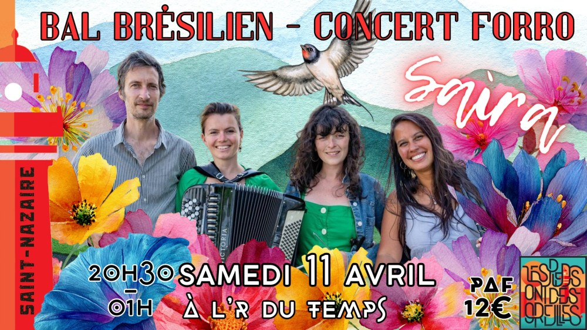

Concert de Saíra et stages – à Saint-Nazaire

Nous sommes ravis d’accueillir pour la deuxième fois le groupe Saíra à l’R du Temps !✨
Une journée musicale et dansante exceptionnelle vous attend, avec stages, pratique et bal pour profiter pleinement de la musique brésilienne et perfectionner vos mouvements 🌺
🌙 Bal & Concert – l’R du Temps 🪗💛
À partir de 20h30 – Bal Forró : concert de Saíra
Saíra vous embarque au cœur du Nordeste du Brésil avec un répertoire inspiré du forró des années 70 et des musiques populaires à danser : du forró au coco, de la valse à la ciranda.
Accordéon, cavaquinho, percussions et voix se mêlent pour revisiter les classiques, proposer des arrangements originaux et composer de nouveaux airs à danser.
Un bal brésilien chaleureux et populaire, pensé pour ravir autant les amateur·ices de musique que les danseur·ses invétéré·es 🌷🕺💃
🎟️ Entrée bal : 12 €
Réservez votre place sur HelloAsso !
🌞 Stages & pratique (Salle Gambetta) 🌸
🐛🌺 14h00 – 15h30 : Stage niveau 1 avec Tatiana Barros
- Pour les personnes connaissant déjà les pas de base du forró
- Apprentissage des mouvements fondamentaux et perfectionnement
🦋🌸 15h45 – 17h15 : Stage niveau 2 avec Tatiana Barros
- Accessible aux personnes qui auront suivi le stage niveau 1
- Maîtrise des figures de base du forró recommandée
- Développement des figures et fluidité sur la piste
💃 17h15 – 19h00 : Pratique libre 🌷
- Moment convivial pour expérimenter, répéter et échanger avant le bal
🌟 Une journée complète dédiée au forró 🌸✨
Entre apprentissage, pratique et concert, profitez d’une immersion totale dans la musique et la danse brésilienne.
On a hâte de vous retrouver sur la piste ! 🎶🌸✨